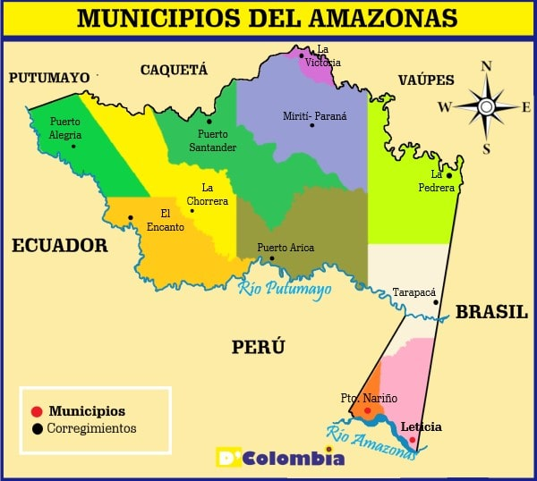
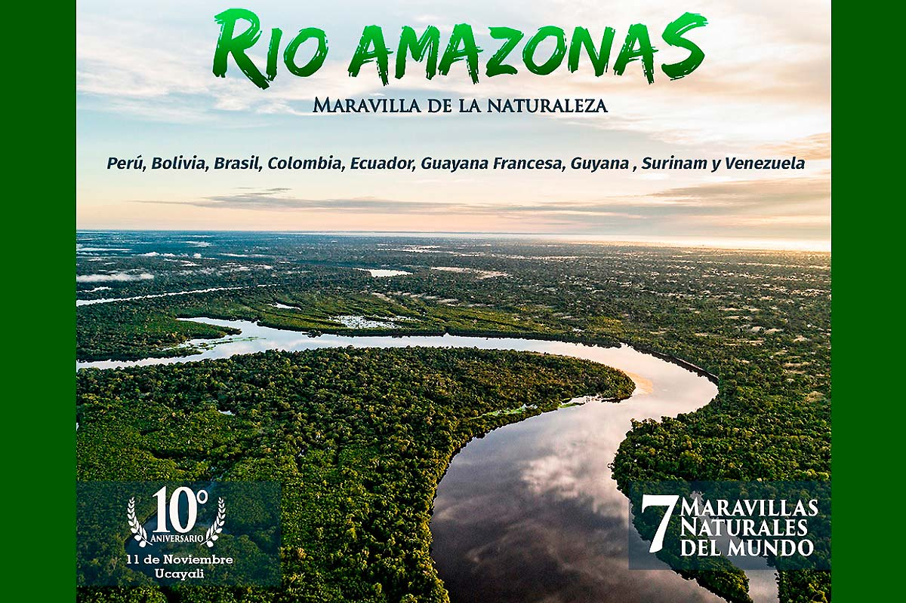
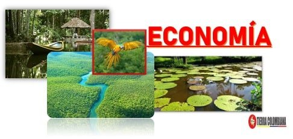
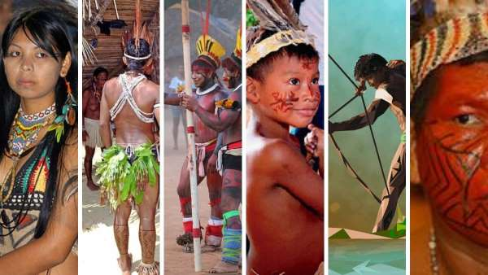
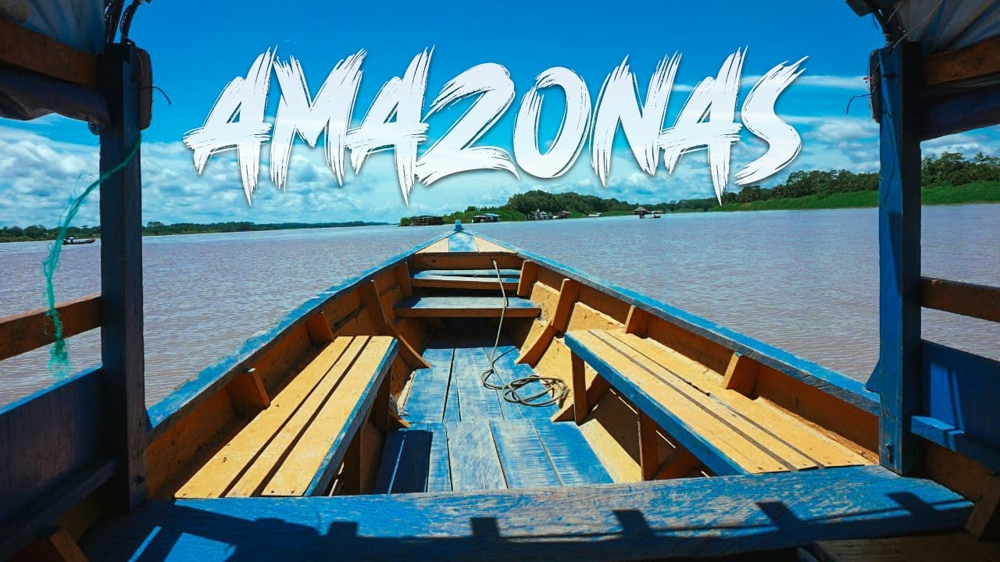

DEPARTAMENTO DEL AMAZONAS
MAPA DEL AMAZONAS

HISTORIA DEL AMAZONAS
La historia del Amazonas está marcada por la presencia de diversas comunidades indígenas que habitaron la región durante milenios, como los ticuna, yucuna y nukak. Con la llegada de los europeos en el siglo XVI, la región comenzó a ser explorada y colonizada, lo que llevó a la explotación de sus recursos y al impacto negativo en las comunidades indígenas. A lo largo de los siglos, la Amazonía ha sido un foco de interés para la explotación de recursos naturales, especialmente la goma, el caucho y, más recientemente, la minería y la agricultura.

ECONOMIA DEL AMAZONAS
La economía del Amazonas se basa principalmente en la explotación de recursos naturales, como la madera, el petróleo y los minerales. La agricultura también es importante, con cultivos como cacao y frutas tropicales. Sin embargo, muchas comunidades dependen de la pesca y la recolección de productos forestales no maderables. En años recientes, ha habido un crecimiento en la economía turística, promoviendo el ecoturismo y la conservación de la biodiversidad.

CULTURA DEL AMAZONAS
La cultura del Amazonas es rica y diversa, influenciada por las tradiciones de las comunidades indígenas. Las artesanías, como la cestería y la cerámica, son comunes, y las tradiciones orales y mitológicas son fundamentales en la vida comunitaria. La música y la danza, así como las festividades que celebran la conexión con la naturaleza, son vitales para la identidad cultural de la región. Además, la influencia de la colonización ha aportado elementos mestizos a la cultura amazónica.

TURISMO DEL AMAZONAS
El turismo en el Amazonas se centra en el ecoturismo y la observación de la biodiversidad. Atrae a visitantes interesados en explorar la selva, sus ríos y su fauna. Destinos como Leticia y el Parque Nacional Natural Amacayacu son populares para actividades como el senderismo, el avistamiento de aves y el contacto con comunidades indígenas. El turismo busca promover la conservación de la naturaleza y el respeto por las culturas locales, aunque enfrenta desafíos debido a la explotación de recursos naturales.
